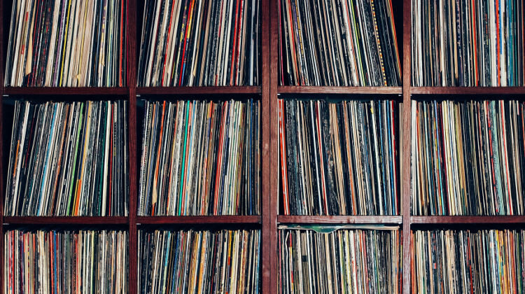

Tanácsok kezdőknek
Lemezjátszó választás
Ezzel a témával nem szeretnék sokat foglalkozni, mert magam sem vagyok a legnagyobb szakértő, de talán azt el tudom mondani, hogy merre kell elindulnia annak, aki lemezjátszót szeretne venni. Kifejezetten a belépő kategóriával fogunk foglalkozni, hiszen egy bizonyos szint felett nem lehet végzetesen mellényúlni.
Mit ne vegyünk?
Kerülni kell a nagyon olcsó és gagyi lejátszókat. Gyakori, hogy kis bőrönd formájúak, ami miatt nagyon jól néznek ki a polcon, de lemez hallgatásra alkalmatlanok. Nemcsak a hangminősége vállalhatatlan, de a lemezeket is tönkre fogja tenni, hiszen nem állítható sem a tűnyomás, sem az antiskating.

Ha megnézzzük ezekben ugyan az a kínai szerkezet van, ugyan azzal a műanyag szárú tűvel. Ezek mellett pedig a nagyon olcsó anyaghasználat és a beépített erősítő, hangszóró (esetlegesen még a bluetooth is) is árulkodó. Manapság már a Mediamarkt polcain is találni lemezjátszókat, ezeket érdemes kerülni. Ha új lemezjátszót veszünk, akkor azt csakis szakboltból érdemes venni, ahol nem sózzák rá az emberre az ipari hulladékot, hanem értenek hozzá és segítenek a megfelelő választásban.

Ezeket mindenképp kerüljük. Nembaj, ha nincs sok pénzünk, pár tízezerért is van olyan használt lemezjátszó, ami kezdésnek tökéletes és nem fogja tönkretenni a lemezeinket.
Mi van felette?
Egy fokkal feljebb lépve hamart szembe találhatjuk magunkat az Audio-Technica AT-LP60 lemezjátszójával. Ez már nem fogja tönkretenni a lemezeinket, hiszen ez AT3600 hangszedővel van szerelve és rendesen be van állítva a tűnyomás. A hangja nem elviselhetetlen, de nem kell tőle sokat várni. Én viszont nem tudom jó szívvel ajánlani, hiszen sem a nyomóerő, sem az antiskating nem állítható, így nem lehet a hangszedőt cserélni, amivel a hangja javulhatna. Az ára közelít a 70.000Ft-hoz, ennyi pénzért már nagyon jó használt cuccokat lehet kapni.
Mit vegyünk használtan?
Szűkebb pénztárca esetén mindenképp a ’80-as években, itthon kapható lemezjátszók között néznék szét. Ezeket már pártízezer forintért be lehet szerezni és egy normális, új hangszedővel kellemes hangzás szedhető ki belőlük. Persze itt is óvatosnak kell lenni, akkoriban is árultak olyan „gyalukat”, amik mindenre jók voltak, csak lemez lejátszására nem. Én elsősorban egy NAD 5120 „rút kiskacsa” lemezjátszót néznék, ez volt a Keravillban a csúcs (ne tévesszen meg senkit a NAD márkajelzés, ez valójában a csehszlovák Tesla gyártmánya volt, csak a NAD nyugaton is forgalmazta), a HiFi Magazinban oldalakon keresztül írtak arról, hogy miként lehetett tuningolni az akkori, szűkös keretek között.
Emellett még a „tojáshéjnak” gúnyolt, nagyrészt itthon gyártott, lemezjátszókra érdemes vetni egy pillantást. Nagyrészt ezüst színű műanyag házat kaptak, innen kapták a gúnynevüket is, de itt már állítható volt a tűnyomás, az antiskating, ezáltal rendesen lehet benne hangszedőt cserélni. Én is egy Akai AP-Q310-et használok, ha valaki jó állapotban ki tud fogni egyet valamelyik típusból, akkor kellemes csalódást tudnak okozni. Aki jobban elmélyülne a témában, annak javaslom az Analógia blog írását, valamint a HiFi Magazinok tanulmányozását. Efölött már találhatunk régebbi DUAL CS505-ös pörgetőket és a vele egy kategóriában lévőket, de ezeket a típusokat nem ismerem túlzottan és tapasztalatom sincs velük, de mindenki szerint lekörözi a tojáshéjakat. Azonban nem szabad elfelejteni, hogy ezekben a lemezjátszókban már elég régi hangszedők dolgoznak és a tű is sokszor kopott, ezért azt mindenképp cserélni kell. Véleményem szerint a legolcsóbb, amit érdemes megvenni az a „zöld béka” gúnynévvel ellátott Audio-Technica AT-VM95e. Én is ezt használom, nagy előnye, hogy a hangszedő teste megegyezik a széria drágább modelljeivel, így később, ha feljebb szeretnénk lépni, elég csak megvenni bele valamelyik drágább, kidolgozottabb csiszolású tűt, például a narancsot vagy a pirosat.
Aki mindenképp új lemezjátszót szeretne venni az készüljön, hogy 100.000 Forint alatt nem igazán fog találni olyat, ami érdemes megvenni. Itt is az Analógia blog egyik írását ajánlom az új lemezjátszókról.
Lemezek tárolása
Fontos, hogy a megfelelő módon tároljuk a lemezeinket. Kezdőknél előfordulhat az a hiba, hogy a lemezeket fektetve, egymáson tárolják. Ez súlyos hiba, hiszen a vinyl egy viszonylag puha és rugalmas műanyag, így könnyen eldeformálódhat a nyomás alatt, ami akár menthetetlenül tönkre is teheti a lemezeinket. Ezért fontos, hogy mindig állítva, nem túl szorosan tároljuk a lemezeinket.
Továbbá hasznos lehet még egy külső lemezvédő fólia, ami segít megvédeni a lemezeinket a portól és a borítót a fizikai behatásoktól. Többfajtát lehet venni, van ami visszazárható, de vékonyabb, van ami PVC és van ami polietilén. Én az utóbbit szoktam használni, főleg, mert egyes fórumokon olvasni olyat, hogy egy nyári melegben a túl szorosan összezsúfolt lemezeknél előfordulhat, hogy a PVC tok megfogja a borítót, amit később nem lehet eltávolítani.
Tisztítás
Azonban a megfelelő tárolás mellett legalább annyira fontos a tisztántartás, hogy megkíméljük a lemezeink életét. Hiszen, ha porosan/koszosan játsszuk le am lemezt, akkor a tű bele tudja karcolni a lemezbe porszemet, ezzel maradandó károkat okozva. Ehhez először is a legfontosabb egy szénszálas törlőkefe, amivel a lemez felületéről tudjuk letörölni a port. Ilyet több márka is árul, már párezer forintért beszerezhetünk egyet. És ha már a keféknél tartunk, szintén fontos a tű tisztítására szolgáló kefe. Ez is csekély tétel egy lemezgyűjtemény méretéhez képest, azonban elengedhetetlen kiegészítő.
De mi van akkor, ha nem csak az otthoni por szállt rá a lemezre, hanem láthatóan koszos annak felülete? Ekkor jön képbe a lemezmosás.
De mielőtt betennénk a csap alá a lemezeket tisztázzuk, hogy milyen fajtái is vannak a lemezmosásnak:
- Manuális mosó (Spin Clean):
Kisebb mosógép, ahol az embernek kell manuálisan pörgetni a lemezt egy mosófolyadékkal teli tálban. Nekem nincs vele tapasztalatom, aki próbálta az azt mondta, hogy nem rossz, de nem tökéletes. Ezért inkább a másik opciókat javaslom.
- Ultrahangos mosás:
Ez és a következő már zsebbenyúlósabb történet, viszont ezek 100%-ban hatékony technológiák. Itt is egy kád folyadékban úsznak a lemezeink, viszont itt a tisztítást az ultramagas frekvenciás hanghullámok végzik, kefék nem is érintkeznek a lemezzel. Előnye, hogy csendes és egyszerre akár több lemezt is lehet vele mosni, hátránya viszont, hogy a gép nem szívja le a folyadékot a lemezünkről, így a szárításról is nekünk kell gondoskodnunk.
- Vákuumos mosás:
Ez a legelterjedtebb technológia, a legtöbben erre gondolnak, ha a lemezmosásról beszélnek. Itt lassan pörög egy tányéron a lemezünk és nekünk kell egy speciális mosófolyadékot folyatni rá, majd elkenni egy kefével. Ezután pedig egy szívókarral le kell róla szívni a feloldott koszt és a folyadékot. Lényegében egy porszívó és egy lemezjátszó szerelemgyereke. Több gyártó is gyárt ilyet, nekem egy magyar lemezgyűjtő által készített modell van. Kezdőként soknak tűnik az ára, de ha már elég nagy a gyűjtemény, akkor érdemes befektetni egybe, addig pedig érdemes keresni olyat, aki vállal bérmosást. Jellemzően 400-450Ft/lemez körül van az ilyen szolgáltatások ára.
Az interneten olvasni mindenféle barkács technikát faragasztóról és egyéb módszerekről, ezek azonban több kárt is tudnak tenni a lemezünkben. Ezeket lehetőleg hanyagolja mindenki.
Miután lemostuk a lemezünket, nem érdemes azt visszatenni a régi papírtasakba, hiszen az ugyan úgy koszos. Érdemes venni új, antisztatikus tasakokat és azokat használni. Van mindenféle, lekerekített sarkú, szögletes, olyan, aminek a külseje papír és a belseje fólia (én is ezt a fajtát preferálom) stb… Viszont a lényeg, hogy antisztatikus legyen, ne valami sima papír, ami összekarcolhatja a lemezünk.
Rendszerezés
Egy idő után mindenkinek felmerül az, hogy valahova írni kellene, hogy mi az, ami már megvan. Erre a legjobb megoldás a Discogs. Itt lehet katalogizálni a teljes gyűjteményünk, valamint beépített piactérrel is rendelkezik, ha vásárolni vagy eladni szeretnénk. Az alábbi videót javaslom mindenkinek, aki el szeretné kezdeni katalogizálni a gyűjteményét.